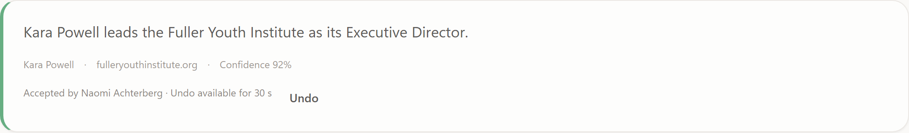

Harvest Map · Journeys 1 to 3
Answer, research,
review
Six questions about the organizations serving Christian youth, and the loop that answers them.
Three journeys, one loop
01Answer the questions
Read the six answers and the sources behind them.
02Run research
Ask the web where an answer is thin.
03Review a finding
Accept, edit or reject before a record changes.
Most impactful problem
Impact score = reach × severity × tractability
One failure stays in its card
06 · PARTIAL
Where are they on LinkedIn?
Couldn't load this answer
The findings service didn't answer in time.
Retry
- Each card loads its own answer
- A failure shows only in that card
- Retry reloads just that answer
- The other five keep working
Ask the web · Re-run or press R
What to look for, and how deep
Look for
- Organisations
- People
- LinkedIn profiles
Depth
- Quick about 1 minute
- Standard about 5 minutes
- Deep about 20 minutes · more sources
Findings need two sources, or one trusted source, before they count as verified.
Something else needs a question
Behind Run
QUEUEDRun is saved
Numbered, with who started it.
→
CLAUDE · WEB SEARCHThe web is searched
Depth sets how many searches.
→
FINDINGSHeld for review
Statement, sources, confidence.
Research · Findings to review
Accept applies at once

- Record created or updated
- Activity entry: who, and which run
- Undo for 30 seconds
- Reject keeps the source, changes nothing
The loop
- 1Read the answers
- 2Ask the web where they are thin
- 3Decide what the web found
Next: browse and edit the organizations behind these answers.